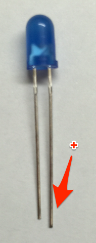

2. インテルEdisonの設定¶
インテルEdisonの準備を行います。
2.1. センサーの接続¶
Grove Kitの中から照度センサーとLED、LCDを取出してください。
照度センサーはこちらです。(LIGHTと書いてあります）

LEDは組み立て式となります。袋からLEDを取り出してボードに装着します。ピンが長い方が+となります。

LCDはこちらです。

次に、Arduino互換ボードをEdisonに装着します。(Arduino互換ボードの図)

{kind=link}
Arduino互換ボードにセンサーとLED、LCDを接続します。以下のように接続してください。
| ポート | 設定 |
|---|---|
| A0 | 照度センサー |
| D8 | LED |
| I2C | LCD |
2.2. シリアルポート接続¶
Edisonへ接続します。まず、Edisonにシリアルポート経由で接続します。USBケーブルでPCとEdisonを接続し、シリアルコンソールを開きます。
Windowsの場合
USBケーブルとACアダプタを図のように接続してください。

MacOSの場合
USBケーブル2本を図のように接続してください。
ターミナルソフトでEdisonに接続してください。接続に必要な情報はこちらです。特にBaud Rateにご注意ください!
| 設定 | 設定項目 |
|---|---|
| Port | Edisonが接続されているUSBポート(Macであれば/dev/cu.usbserial-xxxx[FTDI]) |
| Baud Rate | 115200 |
| Data Bits | 8 |
| Stop Bits | 1 |
| Parity | none |
Teratermをご利用の場合、メニューの[設定]-[シリアルポート]からスピードを”115200”に変更するのを忘れないでください。
MacOSをご利用の場合は、ターミナルから以下のコマンドを入力することで接続が可能です。
$ sudo screen /dev/tty.usbserial-XXXXXXX 115200
または、
$ sudo cu -s 115200 -l /dev/tty.usbserial-XXXXXXX
Password: ←MacOSのrootパスワードを入力
プロンプトが表示されれば接続成功です。loginのプロンプトで、ユーザ名”root”、パスワード”Password1”でログインしてください。
edison login: root
Password: ******** ←パスワードを入力
root@edison1: ~#
2.3. WiFi設定¶
WiFiの設定を行います。ログイン後、configure_edison –wifi コマンドでSSIDとパスワードの設定を実施してください。
root@edison1: ~# configure_edison --wifi
Configre Edison: WiFi Connection
Scanning: 8 seconds left..
1. Exit WiFi setup
2. Manually input a hidden SSID
3. Guest
4. xxxxxxxxx
Enter 0 to rescan for networks.
Enter 1 to exit.
Enter 2 to input a hidden network SSID.
Enter a number between 3 to N to choose one of the listed network SSIDs: ←Guestが表示されている番号を入力
Is Guest corrrect? [Y or N]: ←Yを入力
What is the network password?: ←WiFiのパスワードを入力
Initiating connection to Guest. Please wait...
Attempting to enable network access, please check 'wpa_cli status' after a minute to confirm.
Done. Please connect your laptop or PC to the same network as this device and go to http://x.x.x.x or http://edison.local in your browser.
(Doneが出力されたら成功）